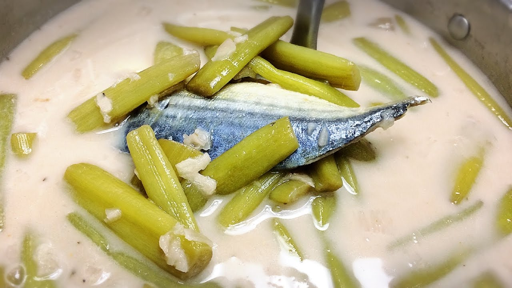

Eat-Rai-Dee
Home
Cook
Menu
(current)

Ingredients:
สายบัว ประมาณ 20 ต้นยาวๆ ลอกใยบัวออก หั่นเป็นท่อนๆ ขนาดพอคำ
ปลาทูนึ่ง 2 ตัว (นำไปย่าง หรือทอดก็ได้ค่ะ)
น้ำตาลมะพร้าว 1 ช้อนโต๊ะ
หัวกะทิ 400 ml
น้ำสะอาด 500 ml ไว้ต้มน้ำสต็อกก้างปลาทู
น้ำปลา 1 ช้อนโต๊ะ
กะปิ 1.5 ช้อนโต๊ะ (ห่อใบตองย่าง)
หอมแดงไทย 20 หัว
พริกไทยเม็ด 1 ช้อนโต๊ะ
พริกขี้หนูสวน ตามชอบ
น้ำมะขามเปียก 1 ถ้วย
Instructions:
เริ่มจากการแกะเนื้อปลาทู แกะก้างออกให้หมดเวลาทานจะได้ไม่มีก้างติดคอ จากนั้นนำก้างปลาทูไปต้มทำน้ำสต็อก โดยต้มน้ำให้เดือดใส่ก้างปลาทูลงไปต้มต่อให้เดือดประมาณ 10 นาที ก็เป็นอันใช้ได้
เตรียมครกหิน ตำพริกไทยเม็ด ใส่หอมแดงตำให้พอหยาบๆ ใส่กะปิย่างลงไปตำให้เข้ากัน พักไว้ก่อน
ตั้งหม้อใส่หัวกะทิ ใส่เครื่องแกงลงไปผัดให้หอม ค่อยๆ ใส่หัวกะทิผัดให้แห้งแล้วเติมหัวกะทิทีละนิด ประมาณ 3 รอบ เพื่อให้กะทิแตกมันและเข้มข้นดี
จากนั้นเติมหัวกะทิส่วนที่เหลือลงไป เติมน้ำสต็อกปลาทู ปิดฝาต้มให้เดือด แล้วชิมรสชาติดูก่อนว่ากะปิเราเค็มมากหรือเค็มน้อย จากนั้นปรุงรสด้วย น้ำตาลปี๊ป น้ำมะขามเปียก น้ำปลา ชิมให้ออกรส เค็ม เปรี้ยว หวาน
เมื่อเดือดแล้วใส่สายบัวกับเนื้อปลาทูลงไป ต้มต่อให้สายบัวและปลาทูสุกดี ชิมอีกรอบ ใส่พริกขี้หนูสวนลงไป เป็นอันเสร็จเรียบร้อย
Result
Home
Menu